Now that we have touched on debugging and some of the useful tools available to help throughout the process, we can begin to look at some common problems and the steps you can take to determine their root cause using these debugging methods.
You are maintaining a web page which contains an unordered list that appears broken in Internet Explorer 8 but renders perfectly in Internet Explorer 7.
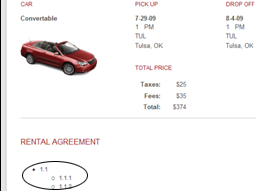
Internet Explorer 7 List displays correctly
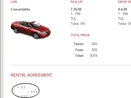
Internet Explorer 8 List displays incorrectly
Debugging Process
Open the web page in Internet Explorer 8.
Open the Developer Tools by pressing F12 or select Developer Tools from the Tools menu to begin checking your code.
Switch the Document Mode to Internet Explorer 7 Standards and ensure the list renders properly. If it does, you can force the browser into Internet Explorer 7 Standards mode as a temporary fix while updating your site (see Determining and Setting the Document Compatibility Mode for details)
Improperly displayed lists and tables are often caused by extraneous or missing tags, leading to malformed HTML. Using the Developer Tools, you can quickly view how the code exists within Internet Explorer and check for any malformed HTML. Inside the HTML tab click the Select Element by Click button (Ctrl + B) and click the list item which is rendered improperly.
After you have clicked on the broken list item, you will be able to view it as it appears in the Document Object Model (DOM). Ensure it and all elements around it have matching closing/ending tags and no extraneous tags are found.
If you are unable to find the offending piece of code, create a copy of the code and begin to reduce the page (see Reducing the Web Page for details) in order to help isolate the problem. Since the problem resides in an unordered list, your focus should be on removing all elements outside the list while still being able to reproduce the problem. Begin by eliminating large chunks of unneeded code within the <body> section such as headers, footers, and extraneous content around the list.
Next, remove all inline and linked JavaScript. If at any point you are unable to reproduce the problem, copy all JavaScript into the page and begin to reduce the scripts to isolate any scripting which affects the unordered list.
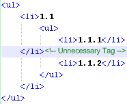
Lastly, copy the styles contained within the all linked CSS files into the page. Eliminate all style declarations which do not affect the unordered list.
Once the page has been fully reduced, it should be easier to spot any malformed HTML or other cause for the broken list. Looking at the code snippet to the right, you will notice the extraneous tag causing the list to appear improperly in Internet Explorer 8. By simply removing the extra tag, the list renders properly.
More Information
Strict interpretation of markup in Internet Explorer 8 makes the browser more standards compliant (Site Compatibility and Internet Explorer 8). If you have code (such as an unordered list or table) that is not rendering properly you will want to make sure that your code is valid and marked up properly. This includes checking for extra or missing tags that might cause rendering issues within your page.
A rental agreement page implements an ASP.net menu control to provide quick navigation to each chapter and section of the agreement document. The menu works perfectly fine in Internet Explorer 7, but when viewed in Internet Explorer 8 the secondary menu items do not display.
Internet Explorer 7 Working Menu
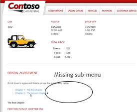
Internet Explorer 8 Non-Working Menu
Debugging Process
Open the web page in Internet Explorer 8.
Open the Developer Tools by pressing F12 or select Developer Tools from the Tools menu to begin checking your code.
Switch the Document Mode to Internet Explorer 7 Standards and ensure the menu works properly. If it does, you can force the browser into Internet Explorer 7 Standards mode as a temporary fix while updating your site (see Determining and Setting the Document Compatibility Mode for details)
Because the secondary menu simply does not display in Internet Explorer 8, the cause of the problem can be due to HTML, CSS, JavaScript or any combination thereof. To begin, it is always easiest to inspect the code as it rendered in Internet Explorer 8. Using the Select Element by Click (Ctrl + B) option inside the HTML tab of the Developer Tools, click the menu to view it within the Document Object Model (DOM).
At this point, you would normally inspect the code to ensure the problem is not caused by malformed HTML or any other obvious problem (see > Lists or tables appear broken in Internet Explorer 8 but display properly in Internet Explorer 7 for details). This cause is less likely, however, with an ASP.net menu control since its HTML, CSS, and JavaScript is automatically generated for you.>
Unable to locate any obvious problem with the code, the next step is to create a copy of the code and begin to reduce the page (see Reducing the Web Page for details). This will limit the scope of the problem and help simplify the debugging process. Begin reducing the page by removing as much code around the top node of the menu control as possible. This involves removing headers, footers, and any other content around menu control which does not prevent you from reproducing the problem. Along the way, switch between Internet Explorer 7 Standards and Internet Explorer 8 Standards document modes to ensure the menu still displays properly in Internet Explorer 7 which will help prevent the introduction of a new bug while fixing the current problem.
Next, copy any linked JavaScript code into the page. Begin to eliminate any JavaScript which does not affect the menu. Again, be careful to ensure at each step the menu still renders properly in Internet Explorer 7 Standards mode as JavaScript is often used to control the behavior of menus.
Finally copy all CSS styles contained within linked CSS files into the page. Eliminate all styles which do not affect the menu. Be sure to watch for any styles which set the z-index of elements, as incorrectly set z-index values can cause elements to be hidden behind other elements on a page.
After reducing the web page, you will be left with an ASP.NET page containing only the menu control with no additional scripts or styles except those generated by .NET. If no immediate problems are apparent, it is advised that you thoroughly research specific ASP.NET menu control compatibility issues before attempting to reduce the code generated by the menu control.
You are maintaining a summary page for a car rental site which displays order information and an image which is updated via JavaScript based on the users preferences. The image is updated properly in Internet Explorer 7 but it is blank in Internet Explorer 8 and generates the following JavaScript error:
Error: null is null or not an object
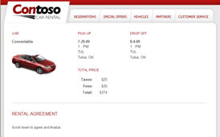
Internet Explorer 7 Properly Updates the Image
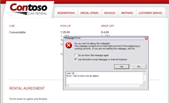
Internet Explorer 8 Displays a Blank Image & JavaScript Error
Debugging Process
At times JavaScript errors can be difficult to debug. To help ease the process, you can use the Developer Tools to track down the source of the JavaScript error. Once you locate where the code breaks, you can begin to reduce the source code to determine the root cause of the error.
Open the web page in Internet Explorer 8.
Open the Developer Tools by pressing F12 or select Developer Tools from the Tools menu to begin checking your code.
Switch the Document Mode to Internet Explorer 7 Standards and check to see if the image is displayed properly. If it is, you can force the browser into Internet Explorer 7 Standards mode as a temporary fix while updating your site (see Determining and Setting the Document Compatibility Mode for details)
Click the Script tab and ensure the Break on Error (Ctrl + Shift + E) button is pressed.
Press the Start Debugging button to begin debugging your JavaScript. By enabling Break on Error and entering Debugging mode, the page will now halt processing of the page when a JavaScript error is encountered. The Developer Tools will also highlight the line of code producing the error while giving you access to the current state of the script. From here, you can implement breakpoints and use locals and watch variables to further inspect the script.
After pressing the Start Debugging button, the page will refresh and halt on the line of code producing the JavaScript error as seen below.
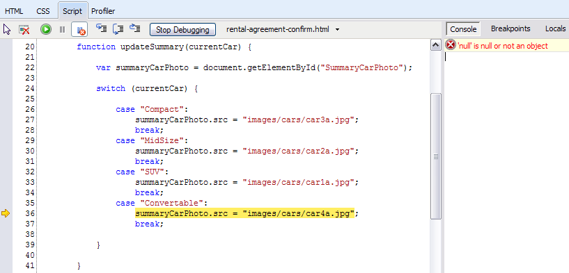
The line summaryCarPhoto.src = images/cars/car4a.jpg is producing the JavaScript error.
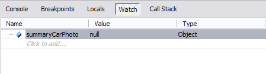
You can further investigate the offending line of code by inspecting the summaryCarPhoto object which is being updated. Click the Watch button in the right hand side of the Developer Tools and type in summaryCarPhoto where it says Click to add Its value is null so it appears the car image element is never found on the page. Reducing the page will help simplify the process of determining why the element is not found.
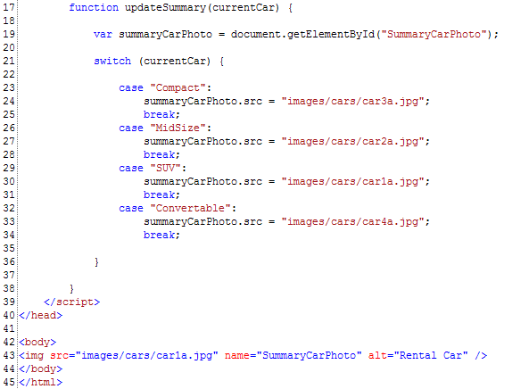
Create a copy of the code and begin to reduce the page (see Reducing the Web Page for details) by isolating the elements which the JavaScript interacts with and removing any extraneous JavaScript, CSS, and HTML. In this case, only the JavaScript which updates the car photo and the image itself are necessary to reproduce the problem. At each step of the reduction process, verify the page still works in Internet Explorer 7 Standards mode ensuring no additional errors have been introduced.
Once a page has been reduced its easier to locate potential problems such as the one shown in the code to the right. By inspection, youll notice the JavaScript is using a method which searches for the car image by a given id but the image element does not contain an id.
More Information
After looking through common differences between Internet Explorer 8 and Internet Explorer 7 on the Site Compatibility and Internet Explorer 8 page, you will notice the getElementById() method searched through name attributes as well as Ids in Internet Explorer 7 but only searches by Id in Internet Explorer 8. By adding an Id attribute to the image element the page will become compatible with Internet Explorer 8 and be more standards compliant.
Error: Object Doesn't Support This Property or Method
The Problem
You maintain a car rental site which retrieves available vehicle information based on user entered preferences. It retrieves the vehicle information by using a remote service which accepts the user preferences as a JSON encoded string. When viewed in Internet Explorer 7 the form works as expected but when viewed in Internet Explorer 8 it encounters the following obscure JavaScript error:
Error: Object doesn't support this property or method
Debugging Process
As in the previous example, you can use the Developer Tools to track down the source of the JavaScript error. Once you find where the code breaks, you can begin to reduce the source code to determine the root cause of the error.
Open the web page in Internet Explorer 8.
Open the Developer Tools by pressing F12 or select Developer Tools from the Tools menu to begin checking your code.
Click the Script tab and ensure the Break on Error (Ctrl + Shift + E) button is pressed.
Press the Start Debugging button to begin debugging your JavaScript. By enabling Break on Error and entering Debugging mode, the page will now halt processing of the page when a JavaScript error is encountered. The Developer Tools will also highlight the line of code producing the error while giving you access to the current state of the script. From here, you can implement breakpoints and use locals and watch variables to further inspect the script.
After you press the Start Debugging button, the page will refresh and halt on the line of code producing the JavaScript error as seen above below.
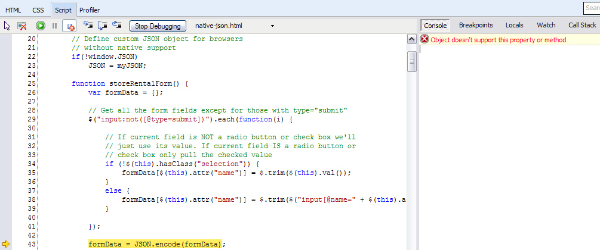
The line formData = JSON.encode(formData) appears to be causing the problem. For some reason, the encode method for the JSON object is producing an error. This method is used to take a JavaScript object and convert it to a JSON string to be saved and then sent to the remote service.
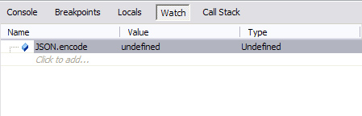
You can further inspect the JSON object by clicking the Watch button in the right hand side of the Developer Tools and typing in JSON.encode where it says Click to add When you try to inspect the JSON.encode method you will see that it is not defined, which would produce an error when the script tries to invoke the method.
To help determine why this method is not available when viewing the site in Internet Explorer 8, you can reduce the code (see Reducing the Web Page for details). When reducing a page to debug a JavaScript error its often best to focus on removing extraneous JavaScript, keeping only the code which is used by the line causing the error. Since the code in question does not manipulate CSS or XHTML, you can safely disregard those sections of code and focus solely on the pages JavaScript.
After reducing the page you are left with the code to the right. Here you can see that the JSON object is being assigned a custom object called myJSON. This is often done when implementing JSON in browsers which do not natively support JSON (such as Internet Explorer 7). This code appears to be checking for native support and defining a custom JSON object if it is not found.
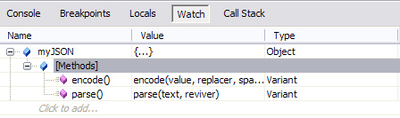
Using the Developer Tools, you can inspect the myJSON object using the Watch panel. As you may notice, this object does include an encode method. However, since Internet Explorer 8 natively supports JSON, the myJSON object is never assigned and the encode method is not available to the JSON object attempting to use it.
More Information
After further investigation on the Site Compatibility and Internet Explorer 8 page, you will discover that this is a common problem encountered by developers migrating sites to Internet Explorer 8. The page contains further information on the root cause of the problem as well as a solution.
You maintain a car rental site which pops up a rental agreement form that a user must read through before continuing on the site. The pop up window shades the main page until the user clicks an agreement button at the bottom of the form. After some recent updates and site maintenance the main page is no longer shaded when the form is opened and the following JavaScript error is reported:
Error: Access is denied.
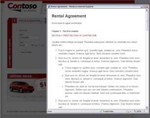
The working pageMain page is no longer shaded, error reported
Debugging Process
Open the web page in Internet Explorer 8.
Open the Developer Tools by pressing F12 or select Developer Tools from the Tools menu to begin checking your code.
Click the Script tab and ensure the Break on Error (Ctrl + Shift + E) button is pressed.
Press the Start Debugging button to begin debugging your JavaScript. By enabling Break on Error and entering Debugging mode, the page will now halt processing of the page when a JavaScript error is encountered. The Developer Tools will also highlight the line of code producing the error while giving you access to the current state of the script. From here, you can implement breakpoints and use locals and watch variables to further inspect the script.
After you press the Start Debugging button, the pop up refreshes and now breaks at the line of code where the error is encountered as seen below. It appears that access is being denied on the line of code which sets the shade-screen element of the main page to visible. Although the bug is not immediately apparent, this gives you a good idea of what code should be isolated when reducing the page.
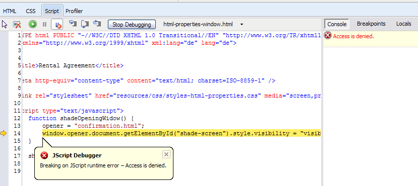
Create a copy of the code and begin to reduce the page (see Reducing the Web Page for details). Your focus should be to isolate the section of code producing the JavaScript error as much as possible. Remove any extraneous JavaScript, CSS, and HTML which does not prevent you from reproducing the problem while still having a working page in Internet Explorer 7 Standards mode.
While reducing the page youll notice if you remove opener = confirmation.html; above the offending line of code the pop up works as expected again. At this point you know this line was the source of the Access is denied JavaScript error.
More Information
While searching online for window.opener access is denied you will discover that others have also experienced this issue. The opener variable can be used in the script but must be preceded by a var declaration to prevent Internet Explorer 8 from restricting access to the window.opener property.
You maintain a site that is properly centered in the page when viewed in Internet Explorer 7 but improperly aligns left when viewed in Internet Explorer 8.
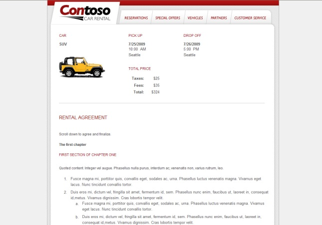
Internet Explorer 7 Properly Centered Page
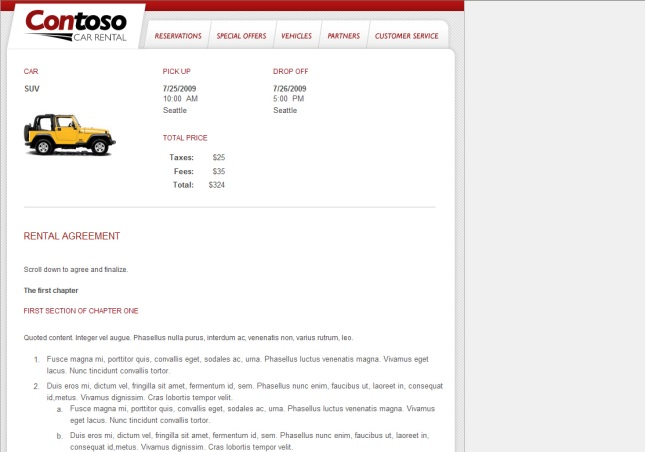
Internet Explorer 8 Improperly Aligned Left Page
Debugging Process
Layout issues are most commonly caused by a pages CSS or XHTML. Since the page renders properly in Internet Explorer 7, we can first force the browser into Internet Explorer 7 Standards mode as a temporary fix while updating the site (see Determining and Setting the Document Compatibility Mode for details). In order to find the root cause of the issue and produce a solution for Internet Explorer 8, well need to further inspect the page using the Developer Tools.
Open the web page in Internet Explorer 8.
Often pages are wrapped by an element which is used to position the page in the browser. To find and inspect this element using the Developer Tools, we can use the Select Element by Click (Ctrl + B) option. By hovering over the page we can find the element which encloses the entire page. Since the whole page is being shifted left and is enclosed by this element, it provides us with the best place to start the debugging process.
After clicking on the element you are displayed the information below.
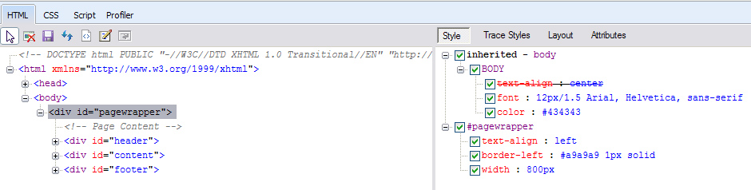
In the left pane you can view the Document Object Model (DOM) as it is in Internet Explorer. On first inspection, there doesnt appear to be any malformed XHTML which would cause the layout to break in Internet Explorer 8. In the right pane we can view CSS style information which is inherited or set by the pagewrapper id. The pagewrapper id itself doesnt appear to implement any positioning styles.
Since the root cause of the problem was not found through inspection, the next step is to focus on reducing the page (see Reducing the Web Page for details) in order to track down the cause of the problem. Begin by using the Developer Tools to set the Document Mode to Internet Explorer 7 Standards mode so you can view the site as it is rendered by Internet Explorer 7.
Next, begin to reduce to the code as far as you can without causing the layout to break in Internet Explorer 7 Standards mode. This will allow you to identify the section of code which causes the layout to center in Internet Explorer 7.
Start by removing all the elements within the top node you are concerned with (in this case the pagewrapper div). This involves deleting the header, content, and footer divs and the elements contained within them. You can replace these elements with some dummy text in order to see whether or not the pagewrapper div is still centered on the page.
Next, remove all inline and linked JavaScript. Since the problem you are attempting to resolve appears to be a layout problem and not a behavioral problem, you can be fairly certain the problem is not caused by JavaScript. This step, however, will allow you to eliminate that possibility entirely.
Finally, copy the styles contained within the linked CSS files into the page itself. You can eliminate all style declarations which do not affect the pages centered layout. If at any point the page no longer centers, you know we have found the line of code we are concerned with.
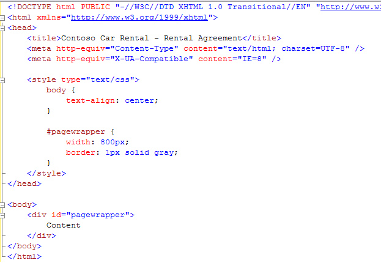
After reducing the web page, you are left with the code featured to the right. Whenever you remove the text-align: center; statement in the body style the pagewrapper div no longer centers on the page. Youll need to determine why this line of code no longer works in Internet Explorer 8 in order to find a solution to the problem.
More Information
As it turns out, this is an example of improved standards support by Internet Explorer 8. An online search of Internet Explorer 8 text align center shows many people have run into the same issue. The long term solution would be to implement a more standard approach to centering the page, such as applying margin: 0 auto on the pagewrapper div.
Your site contains logic to determine the version of Internet Explorer visitors are running. The logic should detect older versions of Internet Explorer and inform users they should consider upgrading, but it is mistakenly informing users running Internet Explorer 8 they should upgrade.
Debugging Process
Open the web page in Internet Explorer 8.
Open the Developer Tools by pressing F12 or select Developer Tools from the Tools menu to begin checking your code.
Determine what Document Mode you are running in (see Determining and Setting the Document Compatibility Mode). Ensure you are running in Internet Explorer 8 Standards mode. Running in other document modes may cause problems with certain browser detection methods.
If you are running in the proper document mode, the next step is to isolate the browser detection code to simplify the debugging process. Create a copy of the code and begin to reduce the page (see Reducing the Web Page for details).
Detection logic usually resides in the <head> section of the page in the form of JavaScript or conditional comments. Be sure to remove as much HTML as possible and copy any linked JavaScript and CSS files into the page. As this is a behavioral problem, you should be able to remove all CSS styles. Reduce the JavaScript code as far as you can while still reproducing the problem.
After reducing the code, you come across the following conditional expression:
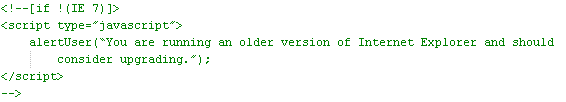
By looking at the detection logic above, its clear only Internet Explorer 7 will be detected as a supported version of Internet Explorer. By revising this logic to check for all versions less than the supported version (Internet Explorer lt 7), compatibility with future versions of Internet Explorer is guaranteed.
Its important to note that the Browser Mode can affect how Internet Explorer 8 is detected as well. For instance, when running in Compatibility Mode or IE7 Browser Mode, Internet Explorer 8 will be detected as Internet Explorer 7 which can also lead to undesired behavior with proper conditional comments. Be sure to check that your script or server is not setting a document compatibility mode which forces Internet Explorer 8 into a different browser mode (see Determining and Setting the Document Compatibility Mode).
To detect users who have chosen to run in Compatibility Mode, developers can look for the Trident/4.0 token in Internet Explorer 8s User-Agent string.
After reading through this document you should feel more comfortable debugging web pages using some of the same tools and methodologies used by the Internet Explorer team.
Although we could not cover all compatibility issues that you may come across, you now have the knowledge and experience to identify compatibility problems, isolate them by reducing the page, and remedy the issue through research of available documentation.
You can further inspect the JSON object by clicking the Watch button in the right hand side of the Developer Tools and typing in JSON.encode where it says Click to add When you try to inspect the JSON.encode method you will see that it is not defined, which would produce an error when the script tries to invoke the method.

 Since the root cause of the problem was not found through inspection, the next step is to focus on reducing the page (see Reducing the Web Page for details) in order to track down the cause of the problem. Begin by using the Developer Tools to set the Document Mode to Internet Explorer 7 Standards mode so you can view the site as it is rendered by Internet Explorer 7.
Since the root cause of the problem was not found through inspection, the next step is to focus on reducing the page (see Reducing the Web Page for details) in order to track down the cause of the problem. Begin by using the Developer Tools to set the Document Mode to Internet Explorer 7 Standards mode so you can view the site as it is rendered by Internet Explorer 7.